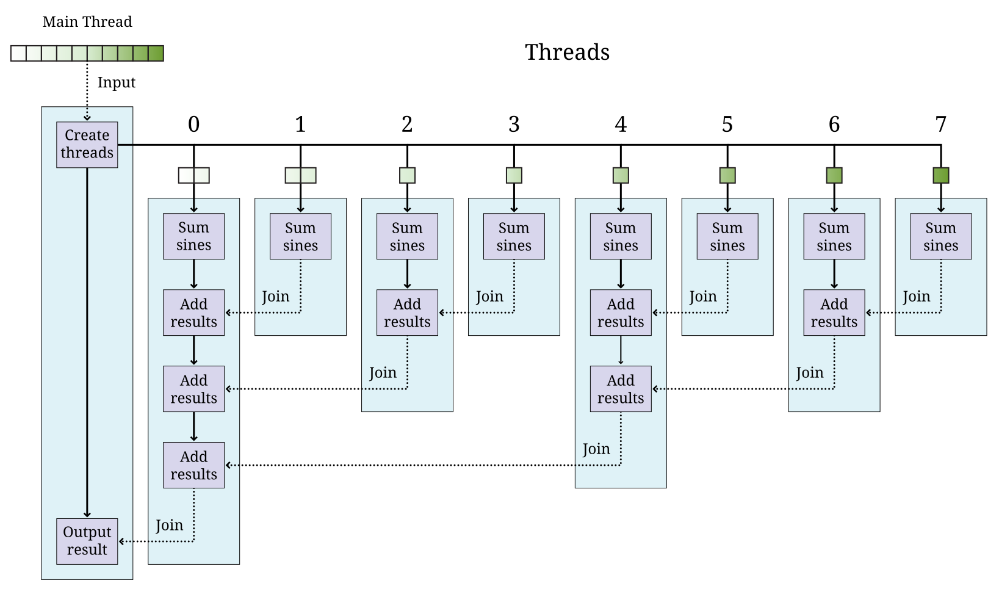

13. Programação Concorrente
O tempo é a substância da qual sou feito. O tempo é um rio que me arrasta, mas eu sou o rio; é um tigre que me devora, mas eu sou o tigre; é um fogo que me consome, mas eu sou o fogo.
13.1. Introdução
Até agora, nos concentramos principalmente em escrever programas sequenciais. A execução sequencial significa que as instruções do programa são executadas uma de cada vez em uma sequência determinada pela lógica do programa e pelos dados de entrada. No entanto, mais de uma instrução de programa pode ser executada independentemente por um processador multicore. Embora seja comum os programadores escreverem programas sequenciais, a disponibilidade generalizada de processadores de vários núcleos em um único computador levou a um aumento na demanda por programadores que possam escrever programas concorrentes.
Um programa concorrente é aquele em que várias instruções podem ser executadas simultaneamente por dois ou mais núcleos. Neste capítulo, mostramos como escrever programas concorrentes simples em Java que exploram o poder de um computador com vários núcleos. Começamos com um problema em que o destino do planeta está em grave perigo!
13.2. Problema: Vírus mortal
Um vírus mortal capaz de exterminar a população mundial está prestes a ser liberado por um gênio do mal. Somente ele sabe o código de segurança que pode interromper a contagem regressiva. O mundo está condenado. A única esperança de salvação está em você e em suas habilidades de programação em Java. Por meio das investigações de uma rede de espionagem ultrassecreta e financiada pelo governo, foi revelado que o código de segurança está vinculado ao número 59.984.005.171.248.659. Esse grande número é o produto de dois números primos, e o código de segurança é a soma deles. Tudo o que você precisa fazer é fatorar o número 59.984.005.171.248.659 em seus dois fatores primos e somá-los.
É claro que há uma pegadinha. O vírus mortal será lançado em breve, tão em breve que talvez não haja tempo suficiente para seu computador pesquisar todos os números um a um. Em vez disso, você deve usar a concorrência para verificar mais de um número por vez.
Esse problema parece artificial? Para manter a privacidade das informações enviadas pela Internet, muitos tipos de criptografia de chave pública dependem da dificuldade de fatorar números grandes. Embora a fatoração do número nesse problema não seja difícil, os números usados para criptografia de chave pública, geralmente com mais de 300 dígitos decimais, resistem à fatoração até mesmo pelos computadores mais rápidos.
13.3. Conceitos: Dividindo para conquistar
O problema do vírus mortal tem uma grande tarefa (fatorar um número) a ser executada. Como devemos dividir essa tarefa para que possamos realizá-la mais rapidamente? Dividir o trabalho a ser feito é o cerne de qualquer solução simultânea para um problema.
Em um processador com vários núcleos, cada núcleo é um trabalhador independente. É preciso algum cuidado para coordenar esses trabalhadores. Antes de tudo, ainda precisamos obter a resposta correta. Uma solução concorrente não tem valor se estiver incorreta e, ao ler e gravar na mesma memória compartilhada, as respostas encontradas por um núcleo podem corromper as respostas encontradas por outros núcleos. A prevenção desse problema será abordada no Chapter 14. Quando pudermos garantir que a solução concorrente está correta, também vamos querer melhorar o desempenho. Talvez queiramos que a tarefa seja concluída mais rapidamente. Talvez tenhamos um sistema interativo que deva continuar a lidar com as solicitações dos usuários mesmo que esteja trabalhando em uma solução em segundo plano. Novamente, se a sobrecarga de coordenar nossos trabalhadores levar mais tempo do que uma solução sequencial ou tornar o sistema menos responsivo, isso não será útil.
Há duas maneiras principais de dividir o trabalho. A primeira é chamada de decomposição de tarefas. Nessa abordagem, cada funcionário recebe uma tarefa diferente para fazer. A segunda é chamada de decomposição de domínio. Nessa abordagem, os funcionários fazem o mesmo trabalho, mas com dados diferentes.
É possível usar tanto a decomposição de tarefas quanto a de domínios para resolver o mesmo problema. Com os dois tipos de decomposição, geralmente é necessário coordenar os trabalhadores para que possam compartilhar informações. Nas próximas duas subseções, descreveremos com mais detalhes a decomposição de tarefas e a decomposição de domínios. Em seguida, discutiremos o mapeamento de tarefas para threads de execução e as diferentes arquiteturas de memória que podem ser usadas para programação simultânea.
13.3.1. Decomposição de tarefas
A ideia de dividir uma tarefa em subtarefas menores é natural. Imagine que você está planejando um jantar. Você precisa comprar suprimentos, preparar o jantar, limpar a casa e arrumar a mesa. Se quatro de vocês estivessem planejando a festa, cada um poderia realizar uma atividade separada. Os preparativos poderiam ser muito mais rápidos do que se uma única pessoa estivesse fazendo o trabalho, mas a coordenação ainda é importante. Talvez a pessoa que estiver preparando o jantar não possa terminar até que certos suprimentos sejam comprados.
A decomposição de tarefas geralmente é mais fácil do que a decomposição de domínios porque muitas tarefas têm divisões naturais. Infelizmente, essa nem sempre é uma maneira eficaz de usar vários núcleos em um computador. Se uma tarefa for concluída muito antes das outras, um núcleo poderá ficar ocioso.
Os dois exemplos a seguir mostram ilustrações simples do processo de divisão de uma tarefa em subtarefas menores no contexto da programação multicore.
Considere um videogame simples que consiste nas seguintes tarefas
-
Iniciar o jogo
-
Processar a jogada
-
Atualizar pontuação
-
Repintar a tela
-
Encerrar o jogo
Suponha que as tarefas B e D sejam independentes e possam ser executadas simultaneamente se houver dois núcleos disponíveis. A tarefa D atualiza continuamente a tela com os dados antigos até que a tarefa C atualize as informações.
Figura 13.1(a) e (b) mostram como as tarefas desse videogame podem ser sequenciadas, respectivamente, em um único núcleo ou em dois núcleos. Todas as tarefas são executadas sequencialmente em um processador de núcleo único. Em um processador de núcleo duplo, as tarefas B e C podem ser executadas em um núcleo enquanto a tarefa D é executada simultaneamente em outro. Observe na figura que a tarefa C envia a pontuação e qualquer outros dados para a tarefa D, que atualiza continuamente a tela. Ter dois núcleos pode permitir uma atualização mais rápida da tela, pois o processador não precisa esperar que as tarefas B ou C sejam concluídas.
Suponha que precisemos avaliar a expressão matemática 2Kate-at² com os parâmetros a e K em um determinado valor de t. Podemos dividir a expressão em dois termos: 2Kat e e-at². Cada um desses termos pode ser atribuído a uma tarefa diferente para avaliação. Em um processador de dois núcleos, essas duas tarefas podem ser executadas em núcleos separados e os resultados de cada uma delas podem ser combinados para encontrar o valor da expressão para a tarefa principal.
Figura 13.2 mostra como essa expressão pode ser avaliada em processadores de um núcleo e de dois núcleos. Às vezes, o uso de vários núcleos para avaliar uma expressão como essa levará menos tempo do que um único núcleo. No entanto, não há garantia de que o uso de vários núcleos sempre será mais rápido, pois as tarefas levam tempo para serem configuradas e para se comunicarem entre si.
Esses exemplos ilustram como uma tarefa pode ser dividida em duas ou mais subtarefas executadas por diferentes núcleos de um processador. Usamos um processador dual-core em nossos exemplos, mas as mesmas ideias podem ser expandidas para um número maior de núcleos.
13.3.2. Decomposição de domínio
Em um programa de computador, cada tarefa executa operações em dados. Esses dados são chamados de domínio dessa tarefa. Na decomposição do domínio, os dados são divididos em partes menores, em que cada parte é atribuída a um núcleo diferente, em vez de dividir uma tarefa em subtarefas. Assim, cada núcleo executa a mesma tarefa, mas em dados diferentes.
No exemplo do jantar, poderíamos ter usado a decomposição de domínio em vez de (ou além de) decomposição de tarefa. Se quiser cozinhar uma grande quantidade de purê de batatas, você mesmo pode descascar 24 batatas. Entretanto, se houver quatro pessoas (e cada uma delas tiver um descascador de batatas), cada pessoa precisará descascar apenas 6 batatas.
A estratégia de decomposição de domínio é muito útil e é um dos principais focos da simultaneidade neste livro. Os problemas da computação moderna geralmente usam dados maciços, que incluem milhões de valores ou milhares de registros de bancos de dados. Escrever programas que possam dividir os dados de modo que vários núcleos possam processar seções menores pode acelerar muito o tempo necessário para concluir o cálculo.
De certa forma, a decomposição de domínios pode ser mais difícil do que a decomposição de tarefas. Os dados devem ser divididos de maneira uniforme e justa. Depois que cada seção de dados tiver sido processada, os resultados deverão ser combinados. Empresas como o Google, que processam grandes quantidades de informações, desenvolveram uma terminologia para descrever esse processo. Dividir os dados e atribuí-los aos funcionários é chamado de etapa do mapa (map). A combinação das respostas parciais na resposta final é chamada de etapa de redução (reduce).
Ilustramos a estratégia de decomposição de domínio nos dois exemplos a seguir.
Suponha que queiramos aplicar a função f a cada elemento de uma matriz a e somar os resultados. Matematicamente, queremos calcular a seguinte soma.
Nessa fórmula, ai é o iésimo elemento da matriz a. Vamos supor que temos um processador dual-core disponível para calcular a soma. Dividimos a matriz de modo que cada núcleo execute a tarefa em metade da matriz. Sejam S1 e S2 denotem as somas calculadas pelo núcleo 1 e pelo núcleo 2, respectivamente.
Supondo que N seja uniforme, os dois núcleos processam exatamente a mesma quantidade de dados. Para N ímpar, um dos núcleos processa um item de dados a mais do que o outro.
Depois que S1 e S2 tiverem sido computados, um dos núcleos pode somar esses dois números para obter S. Essa estratégia é ilustrada em Figura 13.3. Depois que os dois núcleos tiverem concluído seu trabalho em cada metade da matriz, as somas individuais são então somadas para produzir o resultado final.
A necessidade de multiplicar matrizes surge em muitas aplicações matemáticas, científicas e de engenharia. Suponha que nos peçam para escrever um programa para multiplicar duas matrizes quadradas A e B, que são ambas matrizes n × n. A matriz do produto C também será n × n. Um programa sequencial calculará cada elemento da matriz C um de cada vez. vez. Entretanto, um programa simultâneo pode calcular mais de um elemento de C simultaneamente usando vários núcleos.

Neste problema, a tarefa é multiplicar as matrizes A e B. Por meio da decomposição de domínio, podemos replicar essa tarefa em cada núcleo. Conforme mostrado na Figura 13.4, cada núcleo calcula apenas uma parte de C. Por exemplo, se A e B forem 4 × 4, podemos pedir a um núcleo que calcule o produto das duas primeiras linhas de A com todas as quatro colunas de B para gerar as duas primeiras linhas de C. O segundo núcleo calcula as duas linhas restantes de C. Ambos os núcleos podem acessar as matrizes A e B.
13.3.3. Tarefas e threads
É responsabilidade do programador dividir sua solução em uma série de tarefas e subtarefas que serão executadas em um ou mais núcleos de um processador. Nas seções anteriores, descrevemos programas concorrentes como se tarefas específicas pudessem ser atribuídas a núcleos específicos, mas o Java não fornece uma maneira direta de fazer isso.
Em vez disso, um programador Java deve agrupar um conjunto de tarefas e subtarefas em uma thread. Uma thread é muito parecido com um programa sequencial. De fato, todos os programas sequenciais são compostos de uma única thread. Uma thread é um segmento de execução de código que percorre suas instruções passo a passo. Cada thread pode ser executado de forma independente. Se você tiver um processador de núcleo único apenas uma thread pode ser executada por vez, e todas as threads se revezarão. Se você tiver um processador com vários núcleos, tantas threads quantos forem os núcleos núcleos podem ser executados ao mesmo tempo. Não é possível escolher em qual núcleo uma determinada thread será executada. Na maioria dos casos, você não conseguirá nem mesmo saber qual núcleo uma determinada thread está usando.
Ele tem o cuidado de empacotar o conjunto certo de tarefas em uma única thread de execução. Lembre-se dos exemplos anteriores de programação concorrente neste capítulo.
Considere a possibilidade de dividir as tarefas em Exemplo 13.1 em duas threads. As tarefas B e C podem ser agrupadas na thread 1, e a tarefa D pode ser empacotada na thread 2.Essa divisão é mostrada em Figura 13.5(a).
As tarefas para avaliar diferentes subexpressões em Exemplo 13.2 também podem ser divididas em duas threads, conforme mostrado em Figura 13.5 (b). Em muitos problemas, há várias maneiras razoáveis de dividir um conjunto de subtarefas em threads.
Observe que essas figuras são exatamente iguais às figuras anteriores, exceto que as tarefas são agrupadas como threads em vez de núcleos. Esse agrupamento corresponde melhor à realidade, pois podemos controlar como as tarefas são agrupadas em threads, mas não como elas são atribuídas aos núcleos.
Em ambos os exemplos, temos duas threads. É possível que alguma outra thread tenha iniciado a execução dessas threads. Todo programa Java, simultâneo ou
sequencial, começa com uma thread. Vamos nos referir a essa thread como a thread
main, pois ela contém o método main().
Exemplo 13.3 e Exemplo 13.4 usam várias tarefas idênticas, mas essas tarefas operam em dados diferentes. Em Exemplo 13.3, as duas tarefas podem ser atribuídas a duas threads que operam em diferentes partes da matriz de entrada. A tarefa de somar os resultados das duas threads pode ser uma thread separada ou uma subtarefa incluída em uma das outras threads. Em Exemplo 13.4, as duas tarefas podem novamente ser atribuídas a duas threads distintas que operam em diferentes partes diferentes da matriz de entrada A para gerar as partes correspondentes partes correspondentes da matriz de saída C.
Pode haver muitas maneiras de empacotar tarefas em threads. Também pode haver muitas maneiras de decompor os dados em pedaços menores. As melhores maneiras de executar essas subdivisões de tarefas ou dados dependem do problema em questão e da arquitetura do processador em que o programa será executado.
13.3.4. Arquitecturas de memória e concorrência
Os dois paradigmas mais importantes da programação concorrente são a passagem de mensagens e os sistemas de memória compartilhada. Cada paradigma lida com a comunicação entre as várias unidades de código executadas em paralelo de uma maneira diferente. Os sistemas de passagem de mensagens, como o MPI (Message Passing Interface), abordam esse problema enviando mensagens entre unidades de código independentes, chamadas de processos. Um processo que está executando uma tarefa pode ter de esperar até receber uma mensagem de outro processo para saber como proceder. As mensagens podem ser enviadas de um único processo para outro ou transmitidas para vários. Os sistemas de passagem de mensagens são especialmente úteis quando os processadores que executam o trabalho não compartilham memória.
Por outro lado, o sistema interno de concorrência em Java usa o paradigma de memória compartilhada. compartilhada. Em Java, um programador pode criar várias threads que compartilham o mesmo espaço de memória. Cada thread é um objeto que pode executar um trabalho. Descrevemos as threads como uma como uma forma de empacotar um grupo de tarefas, e os processos são outra forma. As pessoas usam o termo processos para descrever unidades de código em execução com memória separada e threads para descrever unidades de código em execução com memória compartilhada.
Quando você aprendeu a programar pela primeira vez, um dos maiores desafios foi provavelmente aprender a resolver um problema passo a passo. Cada linha do programa tinha de ser executada uma de cada vez, de forma lógica e deterministica. Os seres humanos não pensam naturalmente dessa forma. Temos a tendência de pular de uma coisa para outra, fazendo inferências e suposições, pensando em duas coisas não relacionadas ao mesmo tempo, e assim por diante. Como você sabe agora, só é possível escrever e depurar programas por causa da maneira metódica como eles funcionam.
Você pode imaginar a execução de um programa como uma seta que aponta para uma linha de código, depois a próxima, depois a próxima e assim por diante. Podemos pensar no movimento dessa seta como a thread de execução do programa.
O código faz o trabalho real, mas a seta mantém o controle de onde a
execução do programa está no momento. O código pode mover a seta
para frente, pode fazer aritmética básica, pode decidir entre escolhas com instruções pode fazer coisas repetidamente com loops, pode pular para um método e depois voltar. Uma única thread de execução pode fazer todas essas coisas, mas sua seta não pode estar em dois lugares ao mesmo tempo. Ela não pode
dividir dois números em uma parte do programa e avaliar uma declaração if em outra. No entanto, há uma maneira de dividir essa thread
de execução de modo que duas ou mais threads estejam executando partes diferentes
do programa, e a próxima seção mostrará como isso é feito em
Java.
13.4. Sintaxe: Threads em Java
13.4.1. A classe Thread
O Java, como muitas linguagens de programação, inclui os recursos necessários para para empacotar tarefas e subtarefas em threads. A classe Thread e suas subclasses fornecem as ferramentas para criar e gerenciar threads. Por exemplo, a definição de classe a seguir permite que objetos do tipo
ThreadedTask sejam criados. Esse objeto pode ser executado como uma thread separada.
public class ThreadedTask extends Thread {
// Adicionar construtor e corpo da classe
}O construtor é escrito como qualquer outro construtor, mas há um método especial
run() em Thread que pode ser substituído por qualquer uma das
suas subclasses. Esse método é o ponto de partida para a thread de execução associada a uma instância da classe. A maioria dos aplicativos Java
começa com uma única thread principal que é iniciado em um método main(). As threads adicionais devem começar em algum lugar, e esse lugar é o método
run(). Um aplicativo Java continuará a ser executado enquanto houver pelo menos uma thread ativa. O exemplo a seguir mostra duas threads,
cada uma avaliando uma subexpressão separada, como em Figura 13.5(b).
Vamos criar as classes Thread1 e Thread2. As threads de execução criadas por
instâncias destas classes calculam, respetivamente, as duas subexpressões da
Figura 13.5(b) e guardam os valores calculados.
public class Thread1 extends Thread {
private double K, a, t, value;
public Thread1(double K, double a, double t) {
this.K = K;
this.a = a;
this.t = t;
}
public void run() { value = 2*K*a*t; }
public double getValue() { return value; }
}public class Thread2 extends Thread {
private double a, t, value;
public Thread2(double a, double t) {
this.a = a;
this.t = t;
}
public void run() { value = Math.exp(-a*t*t); }
public double getValue() { return value; }
}O método run() em cada thread acima calcula uma subexpressão e salva seu
valor. Mostramos como essas threads podem ser executados para resolver o problema
da expressão matemática em Exemplo 13.6.
13.4.2. Criando um objeto thread
Criar um objeto a partir de uma subclasse Thread é o mesmo que criar
qualquer outro objeto em Java. Por exemplo, podemos instanciar a classe Thread1
acima para criar um objeto chamado thread1.
Thread1 thread1 = new Thread1(15.1, 2.8, 7.53);O uso da palavra-chave new para invocar o construtor cria um objeto Thread1,
mas não começa a executá-lo como uma nova thread. Como em todas as
outras classes, o construtor inicializa os valores dentro do novo objeto
objeto. Uma subclasse de Thread pode ter muitos construtores diferentes com
qualquer parâmetros que seu projetista considere apropriados.
13.4.3. Iniciando uma thread
Para iniciar a execução do objeto thread, seu método start() deve ser
chamado. Por exemplo, o objeto thread1 criado acima pode ser iniciado
da seguinte forma.
thread1.start();Uma vez iniciado, uma thread é executada de forma independente. A chamada do método start()
chama automaticamente o método run() do objeto nos bastidores.
Quando uma thread precisa compartilhar dados com outra thread, ela
pode ter que esperar.
13.4.4. Aguardando por uma thread
Muitas vezes, alguma thread, principal ou não, precisa esperar por outra thread
antes de prosseguir com sua execução. O método join() é usado para esperar
que uma thread termine a execução. Por exemplo, qualquer thread que executar o
código a seguir aguardará a conclusão da thread1.
thread1.join();A chamada join() é uma chamada bloqueante, o que significa que o código que chama
esse método aguardará até que ele retorne. Como ele pode lançar uma
InterruptedException verificada enquanto o código estiver aguardando, o método join()
é geralmente usado em um bloco try-catch. Podemos adicionar um bloco try-catch
ao exemplo thread1 para que possamos nos recuperar de
sermos interrompidos enquanto aguardamos a conclusão do thread1.
try {
System.out.println("Aguardando pela thread 1...");
thread1.join();
System.out.println("Thread 1 finalizada!");
}
catch (InterruptedException e) {
System.out.println("Thread 1 não acabou!");
}Observe que a InterruptedException é lançada porque a thread principal
foi interrompida enquanto aguardava a conclusão da thread1. Se a chamada join()
retornar, então thread1 deve ter terminado e informaremos o usuário.
Se uma InterruptedException for lançada, alguma thread externa deve ter
interrompido a thread principal, forçando-a a parar de esperar pela thread1.
In earlier versions of Java, there was a stop() method which would
stop an executing thread. Although this method still exists, it’s been
deprecated and shouldn’t be used because it can make a program behave
in an unexpected way.
Agora que temos a sintaxe para iniciar threads e esperar que eles terminem, podemos
usar as threads definidos em Exemplo 13.5 com uma thread principal
para criar nosso primeiro programa concorrente completo. A thread principal na
classe MathExpression cria e inicia as threads de trabalho thread1 e thread2
e aguarda sua conclusão. Quando as duas threads concluem sua execução, podemos
solicitar a cada uma delas o valor calculado. A thread principal imprime o
produto desses valores, que é o resultado da expressão que queremos avaliar.
public class MathExpression {
public static void main (String[] args) {
double K = 120, a = 1.2, t = 2;
Thread1 thread1 = new Thread1(K, a, t);
Thread2 thread2 = new Thread2(a, t);
thread1.start(); // Start thread1
thread2.start(); // Start thread2
try { // Wait for both threads to complete
thread1.join();
thread2.join();
System.out.println("Value of expression: " +
thread1.getValue()*thread2.getValue());
}
catch (InterruptedException e) {
System.out.println("A thread didn't finish!");
}
}
}Queremos deixar absolutamente claro quando os threads são criados, começam a execução e terminam. Esses detalhes são cruciais para os pontos mais finos da programação Java simultânea. Na Figura 13.5, parece que a execução da avaliação da expressão matemática começa com a Thread 1, que gera a Thread 2. Embora essa figura explique bem os conceitos básicos da decomposição de tarefas, os detalhes são mais confusos para o código Java real.
No código acima, a execução começa com o método main() em
MathExpression. Ele cria os objetos Thread1 e Thread2 e aguarda
que eles terminem. Em seguida, ele lê os valores dos objetos depois que
eles pararam de ser executados. Poderíamos ter colocado o método main() na classe Thread1, omitindo totalmente a classe MathExpression. Desta forma isso faria com que a execução correspondesse mais de perto à Figura 13.5
mais próxima, mas tornaria as duas subclasses Thread menos
simétricas: a thread principal e a thread1 executariam independentemente o código dentro da Thread1.
executariam independentemente o código dentro da classe Thread1, enquanto somente thread2 executaria
executaria código dentro da classe Thread2.
MathExpression, Thread1, and Thread2.Figura 13.6 mostra a execução de thread1 e
thread2 e a thread principal. Observe que a JVM cria e inicia implicitamente
o thread principal, que cria e inicia explicitamente a thread1 e a thread2.
Mesmo depois que as threads associados a thread1 e thread2 pararem de ser executados,
os objetos associados a eles continuam a existir. Seus métodos e campos ainda podem ser acessados.
13.4.5. A interface Runnable
Embora seja possível criar threads em Java herdando diretamente da classe
Thread diretamente, a API Java permite que o programador use uma
interface em vez disso.
Como exemplo, a classe Summer pega uma matriz de valores int e os soma dentro
de um determinado intervalo. Se várias instâncias dessa classe
forem executadas como threads separadas, cada uma delas poderá somar diferentes partes de
uma matriz.
public class Summer implements Runnable {
int[] array;
int lower;
int upper;
int sum = 0;
public Summer(int[] array, int lower, int upper) {
this.array = array;
this.lower = lower;
this.upper = upper;
}
public void run() {
for(int i = lower; i < upper; i++)
sum += array[i];
}
public int getSum() { return sum; }
}Essa classe é muito semelhante a uma classe que herda de Thread. Imagine
por um momento que o código que segue Summer é extends Thread
em vez de implements Runnable. A principal coisa que uma classe derivada de
Thread precisa é de um método run() sobrescrito. Como somente o método run()
é importante, os projetistas do Java forneceram uma maneira de criar uma
thread usando a interface Runnable. Para implementar essa interface, é necessário apenas
um método public void run().
Ao criar uma nova thread, há algumas diferenças de sintaxe entre os dois estilos. A maneira conhecida de criar e executar um thread a partir de uma subclasse Thread é a seguinte.
Summer summer = new Summer(array, lower, upper);
summer.start();Como o Summer não herda de Thread, ele não tem um método start(), e esse código não será compilado. Quando uma classe apenas implementa Runnable, ainda é necessário criar um objeto Thread e chamar seu método start(). Portanto, é necessária uma etapa extra.
Summer summer = new Summer(array, lower, upper);
Thread thread = new Thread(summer);
thread.start();Essa forma alternativa de implementar a interface Runnable parece mais incômoda do que herdar diretamente da Thread, já que é necessário
instanciar um objeto Thread separado. Entretanto, a maioria dos desenvolvedores prefere projetar classes que implementem Runnable em vez de herdar de
Thread. Por quê? O Java só permite herança única. Se sua classe
implementar Runnable, ela estará livre para herdar de outra super classe
com os recursos que você desejar.
Na decomposição de domínios, muitas vezes precisamos criar várias threads, todas a partir da mesma classe. Como exemplo, considere a seguinte declaração de thread.
public class NumberedThread extends Thread {
private int value;
public NumberedThread(int input) { value = input; }
public void run() {
System.out.println("Thread " + value);
}
}Agora, suponha que desejemos criar 10 objetos de thread do tipo
NumberedThread, então iniciá-los e por fim esperar que sejam concluídos.
NumberedThread[] threads = new NumberedThread[10]; (1)
for(int i = 0; i < threads.length; i++) {
threads[i] = new NumberedThread(i); (2)
threads[i].start(); (3)
}
try {
for(int i = 0; i < threads.length; i++)
threads[i].join(); (4)
}
catch(InterruptedException e) {
System.out.println("A thread didn't finish!");
}| 1 | Primeiro, declaramos uma matriz para manter referências aos objetos NumberedThread. Como qualquer outro tipo, podemos criar uma matriz para armazenar objetos que
herdam de Thread. |
| 2 | A primeira linha do loop for instancia um novo objeto NumberedThread, invocando o construtor que armazena a
iteração atual do loop no campo value. A referência a
cada objeto NumberedThread é armazenada na matriz. Lembre-se de que o construtor
não inicia a execução de uma nova thread. |
| 3 | A segunda linha do loop for faz isso. |
| 4 | Também estamos interessados em saber quando as threads param. A chamada do método join()
força a thread principal a aguardar a conclusão de cada thread. |
Todo o segundo loop for está aninhado dentro de um bloco try. Se a thread principal for interrompida enquanto estiver aguardando a conclusão de qualquer uma das threads terminar, uma InterruptedException será capturada. Como antes, avisamos o usuário
que uma thread não foi concluída. Para código com qualidade de produção, o bloco
bloco catch deve tratar a exceção de forma que a thread possa se recuperar e fazer um trabalho útil, mesmo que não tenha obtido o resultado esperado.
13.5. Exemplos: Concorrência e aceleração
A aceleração é uma das maiores motivações para escrever programas concorrentes. Para entender o aumento de velocidade, vamos supor que temos um problema para resolver. Escrevemos dois programas para resolver esse problema, um que é sequencial e outro que é concorrente e, portanto, capaz de explorar vários núcleos. Seja ts o tempo médio de execução do o programa sequencial e tc o tempo médio de execução do programa concorrente. Para que a comparação seja significativa, suponha que ambos os programas sejam executados no mesmo computador. O aumento de velocidade obtido com a programação concorrente é definido como ts/tc.
A aceleração mede quanto tempo leva para o programa concorrente ser executado em relação ao programa sequencial. Idealmente, esperamos que tc < ts, tornando a aceleração maior que 1. No entanto, simplesmente escrever um programa concorrente não garante que ele seja mais rápido do que a versão sequencial.
Para determinar o aumento de velocidade, precisamos medir ts e tc. O
tempo em um programa Java pode ser facilmente medido com
os dois métodos estáticos a seguir na classe System.
public static long currentTimeMillis()
public static long nanoTime()O primeiro desses métodos retorna a hora atual em milissegundos (ms).
Um millisecond equivale a 0,001 segundos. Esse método fornece a diferença
entre a hora atual no relógio de seu computador e a meia-noite de
1º de janeiro de 1970, horário universal coordenado (UTC). Esse ponto no tempo é
usado para muitos recursos de tempo em muitas plataformas de computador e é chamado de epoch Unix. O outro método retorna a hora atual em
nanossegundos (ns). Um nanossegundo equivale a 0,000000001 ou 10-9 segundos.
Esse método também fornece a diferença entre a hora atual e uma hora fixa, que depende do sistema e não necessariamente do epoch.
O método System.nanoTime() pode ser usado quando você quiser uma precisão de tempo
mais fina do que milissegundos; entretanto, o nível de precisão que ele retorna é
novamente dependente do sistema. O próximo exemplo mostra como usar esses métodos
para medir o tempo de execução.
Suponha que desejemos medir o tempo de execução de um trecho de código Java. Por conveniência, podemos supor que esse código esteja contido no método work(). O trecho de código a seguir mede o tempo de execução de
work().
long start = System.currentTimeMillis();
work();
long end = System.currentTimeMillis();
System.out.println("Tempo decorrido: " + (end - start) + " ms");A saída fornecerá o tempo de execução de work() medido em
milissegundos. Para obter o tempo de execução em nanossegundos, use o método
System.nanoTime() em vez de System.currentTimeMillis().
Agora que temos as ferramentas para medir o tempo de execução, podemos medir o aumento de velocidade. Os próximos exemplos mostram o aumento de velocidade (ou a falta dele) que podemos podemos obter usando uma solução simultânea para alguns problemas simples.
Lembre-se do programa concorrente em Exemplo 13.6 para avaliar uma expressão matemática simples. Esse programa usa duas threads. Executamos esse programa multithread em um computador iMac com um Intel Core 2 Duo rodando a 2,16 Ghz. O tempo de execução O tempo de execução foi medido em 1.660.000 nanossegundos. Também escrevemos um programa programa sequencial simples para avaliar a mesma expressão. Foram necessários 4.100 nanossegundos para executar esse programa no mesmo computador. Ao inserir esses valores para tc e ts, podemos encontrar a aceleração.
Essa aceleração é muito menor que 1. Embora esse resultado possa ser surpreendente, o programa concorrente com duas threads é executado mais lentamente do que o programa sequencial. Nesse exemplo, o custo de criar, executar e processar as threads supera os benefícios do cálculo simultâneo em dois núcleos.
Em Exemplo 13.3, apresentamos o problema de aplicar uma função a cada valor em uma matriz e depois somar os resultados. Digamos que queiramos aplicar a função seno a cada valor. Para resolver esse problema de forma concorrente, particionamos a matriz uniformemente entre várias threads, usando a estratégia de decomposição de domínio. Cada thread encontra a soma dos senos dos valores em sua parte da matriz. Um fator que determina se conseguimos ou não velocidade é a complexidade da função, nesse caso o seno, que aplicamos. aplicamos. Embora possamos obter um aumento de velocidade com o seno, uma função mais simples como dobrar o valor pode não gerar trabalho suficiente para justificar a sobrecarga do uso de threads.
Criamos a classe SumThread cujo método run() soma os senos dos
elementos da matriz em sua partição atribuída.
import java.util.Random;
public class SumThread extends Thread {
private double sum = 0.0; (1)
private int lower;
private int upper;
private double[] array; (2)
public static final int SIZE = 1000000; (3)
public static final int THREADS = 8;
public SumThread(double[] array, int lower, int upper) { (4)
this.array = array;
this.lower = lower;
this.upper = upper;
}| 1 | Primeiro, configuramos todos os campos de que a classe precisará. |
| 2 | Observe que cada objeto SumThread terá sua própria referência à matriz de dados. |
| 3 | Fixamos o tamanho da matriz em 1.000.000 e o número de threads em 8, mas esses valores podem ser facilmente alterados ou lidos como entrada. |
| 4 | Em seu construtor, um SumThread recebe uma referência à matriz de dados
e os limites inferior e superior de sua partição. Como a maioria dos
intervalos que discutimos, o limite inferior é inclusivo, embora o limite superior
seja exclusivo. |
public void run() {
for(int i = lower; i < upper; i++)
sum += Math.sin(array[i]); (1)
}
public double getSum() { return sum; } (2)| 1 | No loop for do método run(), a SumThread encontra o seno
de cada número em sua partição da matriz e adiciona esse valor à sua
soma. |
| 2 | O método getSum() é um acessório que permite que a soma em execução seja
seja recuperada. |
public static void main(String[] args) {
double[] data = new double[SIZE]; (1)
Random random = new Random();
int start = 0;
for(int i = 0; i < SIZE; i++) (2)
data[i] = random.nextDouble();
SumThread[] threads = new SumThread[THREADS];
int quotient = data.length / THREADS;
int remainder = data.length % THREADS;
for(int i = 0; i < THREADS; i++) {
int work = quotient;
if(i < remainder)
work++;
threads[i] = new SumThread(data, start, start + work); (3)
threads[i].start(); (4)
start += work;
} | 1 | O método main() começa instanciando a matriz. |
| 2 | Ele o preenche com valores aleatórios. |
| 3 | Em seguida, cada thread é criado passando uma referência para o vetor e os limites inferior e superior que marcam a partição da thread na matriz. Se o processo que usa o comprimento da matriz e o número de threads para determinar os limites superior e inferior não fizer sentido, consulte Section 6.11 que descreve a divisão justa do trabalho para as threads. Se o comprimento da matriz não for divisível pelo número de threads, a divisão simples não será suficiente. |
| 4 | Depois que cada thread é criada, seu método start() é chamado. |
double sum = 0.0; (1)
try {
for(int i = 0; i < THREADS; i++) {
threads[i].join(); (2)
sum += threads[i].getSum(); (3)
}
System.out.println("Sum: " + threads[0].getSum()); (4)
}
catch(InterruptedException e) {
e.printStackTrace(); (5)
}
}
}| 1 | Depois que as threads começam a trabalhar, a thread principal cria seu próprio total em execução. |
| 2 | Ele itera através de cada thread esperando que seja concluído. |
| 3 | Quando cada thread é concluída, seu valor é adicionado ao ao total em execução. |
| 4 | Finalmente, a soma é impressa. |
| 5 | Se a thread principal for interrompida enquanto estiver aguardando a conclusão de uma thread, o rastreamento da pilha será impresso. |
Em Exemplo 13.4, discutimos a a importância das operações de matriz em muitos aplicativos. Agora que conhecemos a sintaxe Java necessária, podemos escrever um programa concorrente para multiplicar duas matrizes quadradas A e B e calcular a matriz resultante C. Se essas matrizes tiverem n linhas e n colunas, o valor na iésima linha e j^^ coluna de C é
Em Java, é natural armazenarmos as matrizes como matrizes bidimensionais.
Para fazer essa multiplicação sequencialmente, a abordagem mais simples usa três
loops for aninhados. O código abaixo é uma tradução direta da
notação matemática, mas temos de ter cuidado com a contagem.
Observe que a notação matemática geralmente usa letras maiúsculas para
para representar matrizes, embora a convenção Java seja iniciar todos os nomes de variáveis
com letras minúsculas.
for(int i = 0; i < c.length; i++)
for(int j = 0; j < c[i].length; j++)
for(int k = 0; k < b.length; k++)
c[i][j] += a[i][k] * b[k][j];A primeira etapa para criar uma solução concorrente para esse problema é
criar uma subclasse Thread que fará alguma parte da
multiplicação da matriz. Abaixo está a classe MatrixThread que calculará um
número de linhas na matriz de resposta c.
public class MatrixThread extends Thread {
private double[][] a;
private double[][] b;
private double[][] c;
private int lower;
private int upper;
public MatrixThread(double[][] a, double[][] b, (1)
double[][] c, int lower, int upper) {
this.a = a;
this.b = b;
this.c = c;
this.lower = lower;
this.upper = upper;
}
public void run() { (2)
for(int i = lower; i < upper; i++)
for(int j = 0; j < c[i].length; j++)
for(int k = 0; k < b.length; k++)
c[i][j] += a[i][k] * b[k][j];
}
}| 1 | O construtor de MatrixThread armazena referências às matrizes
correspondentes às matrizes A, B e C, bem como os limites inferior e superior das linhas de
C a serem computadas. |
| 2 | O corpo do método run() é idêntico ao da solução sequencial, exceto pelo fato de que seu loop mais externo é executado somente de
lower a upper em vez de percorrer todas as linhas do resultado.
É fundamental que a cada thread seja atribuído um conjunto de linhas que não se
se sobreponha às linhas que outra thread possui. Não só o fato de
várias threads calcularem a mesma linha seria ineficiente, mas muito provavelmente levaria
a um resultado incorreto, como veremos em
Chapter 14. |
O código cliente a seguir usa uma matriz de objetos MatrixThread para
realizar uma multiplicação de matriz. Supomos que uma constante int denominada
THREADS tenha sido definida, o que dá o número de threads que queremos criar.
MatrixThread[] threads = new MatrixThread[THREADS];
int quotient = c.length / THREADS;
int remainder = c.length % THREADS;
int start = 0;
for(int i = 0; i < THREADS; i++) {
int rows = quotient;
if(i < remainder)
rows++;
threads[i] = new MatrixThread(a, b, c, start, start + rows); (1)
threads[i].start(); (2)
start += rows;
}
try {
for(int i = 0; i < THREADS; i++) (3)
threads[i].join();
}
catch(InterruptedException e) {
e.printStackTrace();
}| 1 | Fazemos um loop pela matriz, criando um objeto MatrixThread para cada
posição. Como no exemplo anterior, usamos a abordagem descrita em
Section 6.11 para alocar linhas para cada thread de forma justa.
Cada novo objeto MatrixThread recebe uma referência a cada uma das três
matrizes, bem como uma linha inicial inclusiva e uma linha final exclusiva. |
| 2 | Depois que os objetos MatrixThread são criados, começamos a executá-los com a próxima linha de código. |
| 3 | Em seguida, há um loop for familiar com as chamadas join()
que forçam a thread principal a esperar que as outras threads terminem. |
Presumivelmente,
o código após esse trecho imprimirá os valores da matriz de resultados
ou a usará para outros cálculos. Se não tivermos usado as chamadas join()
para garantir que as threads tenham terminado, poderíamos imprimir uma matriz de resultados que foi preenchida apenas parcialmente.
Concluímos o código da multiplicação de matrizes com threads e o executamos em um computador iMac com um Intel Core 2 Duo rodando a 2,16 Ghz. O programa foi executado para matrizes de diferentes tamanhos (n × n). Para cada tamanho, os tempos de execução sequencial e concorrente em segundos e o tempo de execucação correspondente estão listados na tabela a seguir.
| Size (n) | ts (s) | tc (s) | Speedup |
|---|---|---|---|
100 |
0.013 |
0.9 |
0.014 |
500 |
1.75 |
4.5 |
0.39 |
1,000 |
15.6 |
10.7 |
1.45* |
Somente com matrizes de 1.000 × 1.000 observamos um melhor desempenho ao usar duas threads. Nesse caso, obtivemos um aumento de velocidade de 1,45, marcado com um asterisco. Nos outros dois casos, o desempenho piorou.
13.6. Conteitos: Agendamento de thread
Agora que vimos como várias threads podem ser usadas juntas, várias perguntas surgem: Quem decide quando essas threads são executadas? Como o tempo do processador é compartilhado entre as threads? Podemos fazer alguma suposição sobre a ordem de execução das threads? Podemos afetar essa ordem?
Essas perguntas se concentram no agendamento de threads. Como diferentes sistemas concorrente lidam com o agendamento de forma diferente, descreveremos apenas o agendamento em Java. Embora a programação sequencial tenha tudo a ver com o controle preciso sobre o que acontece depois, a concorrência tira grande parte desse controle do programador. Quando os threads são agendados e em qual processador eles são executados, isso é feito por uma combinação da JVM e do sistema operacional. Com as JVMs normais, não há uma maneira explícita de acessar o agendamento e alterá-lo a seu seu agrado.
Obviamente, há várias maneiras implícitas pelas quais um programador pode manipular a a programação. Em Java, como em várias outras linguagens e sistemas de programação, as threads têm prioridades. As threads de prioridade mais alta são executadas com mais frequência do que as de prioridade mais baixa. Algumas threads estão executando operações de missão crítica que devem ser executadas o mais rápido possível, e algumas threads estão apenas realizando tarefas periódicas em segundo plano. Um programador pode definir as prioridades das threads de acordo com essas prioridades.
A definição de prioridades oferece apenas uma maneira muito geral de controlar
qual thread será executada. As próprias threads podem ter informações mais específicas
sobre quando precisarão ou não de tempo de processador. A thread pode precisar esperar
por um evento específico e não precisará ser executada
até lá. O Java permite que as threads interajam com o agendador por meio dos
métodos Thread.sleep() e Thread.yield(), que discutiremos em [Syntax: Thread states] e
por meio do método wait(), que discutiremos em Chapter 14.
13.6.1. Não determinismo
Em Java, o mapeamento de uma thread dentro da JVM para uma thread no sistema operacional varia. Algumas implementações dão a cada thread Java uma thread do sistema operacional, outras colocam todas as threads Java em uma única thread do sistema operacional (com o efeito colateral de impedir a execução paralela), e algumas permitem a possibilidade de alterar qual thread do sistema operacional uma thread Java usa. Assim, o desempenho e, em alguns casos, a correção de seu programa podem variar, dependendo do sistema que você estiver executando. Esse é, mais uma vez, um daqueles momentos em que o Java é independente de plataforma… mas não totalmente.
Infelizmente, a situação é ainda mais complicada. Tornar as threads parte de seu programa significa que o mesmo programa pode ser executado de forma diferente no mesmo sistema. A JVM e o sistema operacional precisam cooperar para agendar as threads e ambos os programas são montanhas complexas de código que tentam equilibrar muitos fatores. Se você criar três threads, não há garantia que o primeiro será executado primeiro, o segundo segundo e o terceiro terceiro, mesmo que isso aconteça nas primeiras 10 vezes em que você executar o programa. O [executionOrderExercise] mostra que o padrão de execução das threads pode variar muito.
Em todos os programas anteriores a este capítulo, a mesma sequência de entrada sempre produziria a mesma sequência de saída. Talvez o maior obstáculo criado por esse não determinismo seja o fato de os programadores terem de mudar seu paradigma consideravelmente. O processador pode alternar entre execuções de de threads a qualquer momento, mesmo no meio das operações. Todas as possíveis intercalações de execução de thread pode surgir em algum momento. A menos que você tenha certeza de que seu programa se comporta adequadamente em todos eles, talvez você nunca conseguirá depurar seu código completamente. O que é tão insidioso nos bugs não determinísticos é que eles podem ocorrer raramente e ser quase impossíveis de reproduzir. Neste capítulo, apresentamos como criar e executar threads, mas fazer com que essas threads interajam adequadamente é um problema importante que abordaremos nos capítulos seguintes.
Depois dessas terríveis palavras de advertência, gostaríamos de lembrá-lo de que o não determinismo não é em si uma coisa ruim. Muitos aplicativos com threads com muitas entradas e saídas, como os servidores de aplicação, necessariamente existem em um mundo não determinístico. Para esses programas, muitas diferentes sequências de threads em execução podem ser perfeitamente válidas. Cada programa individual pode ter uma definição diferente de correção. Por exemplo, se um servidor do mercado de ações receber duas solicitações para comprar a última ação de uma determinada empresa quase ao mesmo tempo de duas threads correspondentes a dois clientes diferentes, pode ser correto que qualquer um deles obtenha a última ação. No entanto, nunca seria correto que ambos a recebam.
13.6.2. Votação
Até agora, o único mecanismo que introduzimos para coordenar diferentes
threads é usar o método join() para aguardar o término de uma thread.
Outra técnica é polling, ou busy waiting. A ideia é continuar
verificando o estado de uma thread até que ela mude.
Há vários problemas com essa abordagem. O primeiro é que ela desperdiça ciclos da CPU. Os ciclos gastos pela thread em espera continuamente poderiam ter sido usados de forma produtiva por alguma outra thread no sistema. O segundo problema é que precisamos ter certeza de que o estado da thread que estamos esperando não voltará ao estado original ou para algum outro estado. Devido à imprevisibilidade do agendamento, não há garantia de que a thread em espera lerá o estado da outra thread quando ela tiver o valor correto.
Mencionamos a votação em parte porque ela tem uma importância histórica para a programação paralela, em parte porque pode ser útil na solução de alguns problemas deste capítulo e, em parte, porque queremos que você entenda os motivos pelos quais precisamos de técnicas melhores para a comunicação entre threads.
13.7. Sintaxe: Estados da thread
Uma ferramenta Java amplamente utilizada para manipular o agendamento é o método Thread.sleep(). Esse método pode ser chamado sempre que você quiser que uma
thread não faça nada por um determinado período de tempo. Até que o temporizador sleep
expire, a thread não será agendada para nenhum tempo de CPU, a menos que seja
interrompida. Para fazer uma thread de execução dormir, chame Thread.sleep()
nessa thread de execução com um número de milissegundos como parâmetro. Por exemplo, chamar Thread.sleep(2000) fará com que a
thread chamada dormirá por dois segundos completos.
Outra ferramenta útil é o método Thread.yield(). Ele abre mão do uso da
CPU para que a próxima thread em espera possa ser executada. Para usá-lo, uma thread
chama Thread.yield(). Esse método é útil na prática, mas
de acordo com a documentação oficial, a JVM não tem que fazer nada quando
um Thread.yield() é executado. A especificação Java não exige uma implementação
específica. Uma JVM poderia ignorar uma chamada
chamada Thread.yield() completamente, mas a maioria das JVMs passará para a
próxima thread no cronograma.

Figura 13.7 mostra o ciclo de vida de uma thread. A
thread começa sua vida no estado New Thread, depois que o construtor
é chamado. Quando o método start() é chamado, a thread começa a ser executada
e faz a transição para o estado Runnable. Ser executável não significa
necessariamente que a thread está sendo executada em um determinado momento, mas
que ela está pronta para ser executada a qualquer momento. Quando estiver no
estado `Runnable, uma thread pode chamar Thread.yield(), deixando de usar o processador,
mas ainda permanecerá Runnable.
No entanto, se uma thread for dormir com uma chamada Thread.sleep(), aguardará
para que uma condição seja verdadeira usando uma chamada wait() ou executar uma operação de
de E/S bloqueante, a thread fará a transição para o estado Not Runnable. As
threads não executáveis não podem ser agendadas para o tempo de processador até que
acordem, terminem de esperar ou concluam sua E/S. O estado final é
Terminated. Uma thread se torna terminada quando seu método run()
termina. Uma thread terminada não pode se tornar executável novamente e
não é mais uma thread de execução separado.
Qualquer objeto com um tipo que seja uma subclasse de Thread pode informar seu
estado atual usando o método getState(). Esse método retorna um tipo enum, cujo
valor deve vir de uma lista fixa de objetos constantes. Esses objetos são Thread.State.NEW,
Thread.State.RUNNABLE, Thread.State.BLOCKED, Thread.State.WAITING,
Thread.State.TIMED_WAITING e Thread.State.TERMINATED. Embora os outros sejam
autoexplicativos, agrupamos o Thread.State.BLOCKED,
Thread.State.WAITING e Thread.State.TIMED_WAITING no estado Not Runnable, já que
a distinção entre os três não é importante para nós.
As threads também têm prioridades em Java. Quando um objeto que é uma subclasse
de Thread é criado em Java, sua prioridade é inicialmente a mesma da thread que o cria.
Normalmente, essa prioridade é Thread.NORM_PRIORITY, mas há alguns casos especiais em que é uma
boa ideia aumentar ou diminuir essa prioridade. Evite alterar as prioridades de thread
porque isso aumenta a dependência da plataforma e porque os efeitos nem sempre são previsíveis. Esteja
ciente de que as prioridades existem, mas não as use a menos que você tenha um bom motivo.
Vamos aplicar as ideias discutidas acima a um exemplo leve. Você
talvez esteja familiarizado com o som de soldados marchando: “Esquerda, esquerda, esquerda,
direita, esquerda!” Podemos criar uma thread que imprima "Esquerda" e outra que imprima "Direita".
Podemos combinar as duas para imprimir a sequência correta
para marchar e repetir tudo 10 vezes para que possamos
ver com que precisão podemos posicionar as palavras. Queremos usar as ferramentas de agendamento
discutidas acima para obter o tempo correto. Vamos tentar Thread.sleep()
first.
public class LeftThread extends Thread {
public void run() {
for(int i = 0; i < 10; i++) {
System.out.print("Left "); (1)
System.out.print("Left ");
System.out.print("Left ");
try { Thread.sleep(10); } (2)
catch(InterruptedException e) {
e.printStackTrace();
}
System.out.println("Left"); (3)
}
}
}| 1 | Dentro do loop for, essa thread imprime Left três vezes. |
| 2 | Em seguida, ele aguarda 10 milissegundos. |
| 3 | Finalmente, ele imprime Esquerda novamente e repete o loop. |
public class RightThread extends Thread {
public void run() {
try {
Thread.sleep(5); (1)
for(int i = 0; i < 10; i++) {
System.out.print("Right "); (2)
Thread.sleep(10); (3)
}
}
catch(InterruptedException e) {
e.printStackTrace();
}
}
}| 1 | Essa thread aguarda 5 milissegundos para ser sincronizada. |
| 2 | Dentro de seu loop for, ele imprime Right. |
| 3 | Em seguida, ela aguarda 10 milissegundos e repete o loop. |
O programa de driver abaixo cria uma thread para cada uma dessas
classes e, em seguida, as inicia. Se você executar esse programa, verá 10
linhas de Left Left Left Right Left, mas há alguns problemas.
public class MilitaryMarching {
public static void main(String[] args) {
LeftThread left = new LeftThread();
RightThread right = new RightThread();
left.start();
right.start();
try {
left.join();
right.join();
}
catch(InterruptedException e) {
e.printStackTrace();
}
}
}O primeiro problema é que temos que esperar algum tempo entre as
chamadas. Poderíamos encurtar as chamadas Thread.sleep(), mas há limites
na resolução do cronômetro. O maior problema é que as duas
threads podem, às vezes, ficar fora de sincronia. Se você executar o programa muitas
vezes, você poderá ver um Right fora do lugar de vez em quando. Se você
aumentar as repetições dos loops for para um número maior, os
erros se tornarão mais prováveis. O fato de você ver ou não os erros depende um
depende do sistema. Podemos tentar Thread.yield() em vez de Thread.sleep().
public class LeftYieldThread extends Thread {
public void run() {
for(int i = 0; i < 10; i++) {
System.out.print("Left ");
System.out.print("Left ");
System.out.print("Left ");
Thread.yield();
System.out.println("Left");
}
}
}public class RightYieldThread extends Thread {
public void run() {
for(int i = 0; i < 10; i++) {
System.out.print("Right ");
Thread.yield();
}
}
}Essas novas versões das duas classes basicamente substituíram as chamadas para
Thread.sleep() por chamadas para Thread.yield(). Sem a necessidade de
tratamento de exceções, o código é mais simples, mas trocamos um conjunto de
problemas por outro. Se houver outras threads operando na mesma aplicação, eles
serão agendadas de forma a interferir no padrão de rendimento. Se você estiver
executando esse código em uma máquina
com um único processador e um único núcleo, você terá uma boa chance de
ver algo que corresponda ao resultado esperado. No entanto, se estiver executando
em vários núcleos, tudo ficará confuso. É provável que
a LeftYieldThread esteja sendo executada em um processador com a
RightYieldThread em outro. Nesse caso, nenhuma delas tem concorrência
para ceder.
Por fim, vamos dar uma olhada em uma solução de pesquisa de opinião que ainda não é suficiente. Para fazer isso, precisamos de variáveis de estado dentro de cada classe para para saber se ela foi concluída ou não. Cada thread precisa de uma referência para a outra thread para fazer consultas, e o programa controlador deve ser atualizado para adicioná-las antes de iniciar as threads.
public class LeftPollingThread extends Thread {
private RightPollingThread right;
private boolean done = false;
public void setRight(RightPollingThread right) {
this.right = right;
}
public void run() {
for(int i = 0; i < 10; i++) {
System.out.print("Left ");
System.out.print("Left ");
System.out.print("Left ");
done = true;
while(!right.isDone());
right.setDone(false);
System.out.println("Left");
}
}
public boolean isDone() { return done; }
public void setDone(boolean value) { done = value; }
}public class RightPollingThread extends Thread {
private LeftPollingThread left;
private boolean done = false;
public void setLeft(LeftPollingThread left) {
this.left = left;
}
public void run() {
for(int i = 0; i < 10; i++) {
while(!left.isDone());
left.setDone(false);
System.out.print("Right ");
done = true;
}
}
public boolean isDone() { return done; }
public void setDone(boolean value) { done = value; }
}Seja com um único núcleo ou com vários núcleos, essa solução sempre fornecerá
a saída correta. Ou deveria. Os especialistas em Java apontarão que estamos
violando um aspecto técnico do modelo de memória Java. Como não estamos
usando ferramentas de sincronização, não temos garantia de que a alteração da variável
done será sequer visível de uma thread para outra. Na prática, esse
problema raramente o afetará, mas, por segurança, ambas as variáveis
as variáveis done devem ser declaradas com a palavra-chave volatile.
Essa palavra-chave faz com que o Java saiba que o valor pode ser acessado
a qualquer momento por threads arbitrárias.
Outro problema é que não há nenhuma execução paralela. Cada thread deve esperar
para que o outro seja concluído.É claro que esse problema não se beneficia de
paralelismo, mas aplicar essa solução a problemas que podem se beneficiar do
paralelismo pode causar problemas de desempenho. Cada thread
desperdiça tempo ocupado esperando em um loop while que o outro seja concluído,
consumindo ciclos de CPU enquanto faz isso. Você perceberá que o código
ainda deve ser escrito com cuidado. Cada thread deve definir o valor`done` da
outra thread para false. Se as threads fossem responsáveis por definir seus
próprios valores done para false, uma thread poderia imprimir suas
informações e voltar para o topo da tabela for antes que a outra thread
tivesse redefinido seu próprio done para false.
Em resumo, a coordenação de duas ou mais threads é um problema difícil. Nenhuma das soluções que apresentamos aqui é totalmente aceitável. Nós apresentamos ferramentas melhores para coordenação e sincronização em Chapter 14.
13.8. Solução: Vírus mortal
Por fim, apresentamos a solução para o problema do vírus mortal. A essa altura, a
parte da thread desse problema não deve parecer muito difícil.
Ela é mais simples do que alguns dos exemplos, como a multiplicação de matrizes.
Começamos com a classe de trabalho FactorThread que pode ser gerada como uma thread.
public class FactorThread extends Thread {
private long lower;
private long upper;
public FactorThread(long lower, long upper) {
this.lower = lower;
this.upper = upper;
}
public void run() {
if(lower % 2 == 0) // Only check odd numbers
lower++;
while(lower < upper) {
if(Factor.NUMBER % lower == 0) {
System.out.println("Security code: " + (lower + Factor.NUMBER / lower));
return;
}
lower += 2;
}
}
}O construtor do FactorThread recebe um limite superior e um limite inferior,
semelhante ao MatrixThread. Quando um objeto FactorThread tiver esses
limites, ele poderá pesquisar entre eles. O número a ser fatorado é armazenado
na classe Factor. Se qualquer valor dividir esse número igualmente, ele deverá ser
um dos fatores, o que facilita a localização, a soma e a impressão do outro fator,
e imprimir. Temos que adicionar algumas linhas extras de código para garantir que
vamos procurar apenas os números ímpares no intervalo. Essa solução foi ajustada
para eficiência para esse problema específico de segurança. Um programa para
encontrar fatores primos em geral teria de ser mais flexível. A seguir, vamos
examinar o programa controle Factor.
public class Factor {
public static final int THREADS = 4; (1)
public static final long NUMBER = 59984005171248659L;
public static void main(String[] args) {
FactorThread[] threads = new FactorThread[THREADS]; (2)
long root = (long)Math.sqrt(NUMBER); // Go to square root
long start = 3; // No need to test 2
long quotient = root / THREADS;
long remainder = root % THREADS;
for(int i = 0; i < THREADS; i++) {
long work = quotient;
if(i < remainder)
work++;
threads[i] = new FactorThread(start, start + work); (3)
threads[i].start();
start += work;
}
try {
for(int i = 0; i < THREADS; i++)
threads[i].join(); (4)
}
catch(InterruptedException e) {
e.printStackTrace();
}
}
}| 1 | As constantes estáticas mantêm o número a ser fatorado e o número de threads. |
| 2 | No método main(), criamos uma matriz de threads para
armazenamento. |
| 3 | Em seguida, criamos e iniciamos cada objeto FactorThread, atribuindo limites
superior e inferior ao mesmo tempo, usando a técnica padrão de
Section 6.11 para dividir o trabalho de forma justa. Como nós
sabemos que o número que estamos dividindo não é par, começamos com 3.
Ao chegar à raiz quadrada do número, sabemos que encontraremos apenas o menor dos
dois fatores. Dessa forma, podemos evitar que uma thread encontre o menor enquanto outro encontra a maior. |
| 4 | Em seguida, temos as chamadas join() usuais para garantir que todas as
threads foram concluídas. Nesse problema, essas chamadas são desnecessárias.
Uma thread imprimirá o código de segurança correto e as outras
procurarão sem sucesso. Se o programa continuar a fazer outro trabalho, talvez seja
precisaríamos deixar as outras threads terminarem ou até mesmo interrompê-las.
Não se esqueça das chamadas join(), pois elas costumam ser muito importantes. |
13.9. Resumo
Neste capítulo, exploramos duas estratégias para obter uma solução concorrente para problemas de programação. Uma estratégia, a decomposição de tarefas, divide uma tarefa em duas ou mais subtarefas. Essas subtarefas podem então ser empacotadas como threads Java e executadas em diferentes núcleos de um processador com vários núcleos. Outra estratégia, decomposição de domínio, divide os dados de entrada em pedaços menores e permite que diferentes threads trabalhem de forma concorrente em cada pedaço de dados.
Uma solução concorrente para um problema de programação pode, às vezes, ser executada mais rapidamente do que uma solução sequencial. A velocidade mede a eficácia de uma solução concorrente é eficaz na exploração da arquitetura de um processador com vários núcleos. Observe que nem todos os programas concorrentes levam a um aumento de velocidade, pois alguns são executados mais lentamente do que os sequenciais. Escrever um programa concorrente é um desafio que nos força a dividir o trabalho e os dados de uma forma que explore melhor os processadores e o sistema operacional disponível.
O Java oferece um rico conjunto de primitivos e elementos sintáticos para escrever programas concorrentes, mas apenas alguns deles foram apresentados neste capítulo. Os capítulos seguintes fornecem ferramentas adicionais para codificar programas concorrentes mais complexos.
13.10. Exercícios
Problemas conceituais
-
Os métodos
start(),run()ejoin()são partes essenciais do processo de uso de threads em Java. Explique a finalidade de cada método. -
Qual é a diferença entre estender a classe
Threade implementar a interfaceRunnable? Quando você deve usar uma em vez da outra? -
Como o método
Thread.sleep()e o métodoThread.yield()afetam o agendamento de threads? -
Considere a expressão em Exemplo 13.2. Suponha que as operações de multiplicação e exponenciação exijam 1 e 10 unidades de tempo, respectivamente. Calcule o número de unidades de tempo necessárias para avaliar a expressão como em Figura 13.2(a) e (b).
-
Suponha que um computador tenha um processador quad-core. As tarefas em Exemplo 13.1 e Exemplo 13.2 podem ser subdivididas para melhorar o desempenho em quatro núcleos? Por que sim ou por que não?
-
Considere a definição de velocidade de [Examples: Concurrency and speedup]. Vamos supor que você tenha um trabalho com 1.000.000 de unidades de tamanho. Uma thread pode processar 10.000 unidades de trabalho a cada segundo. São necessárias 100 unidades adicionais de trabalho para criar uma nova thread. Qual é o aumento de velocidade se você tiver um processador dual-core e criar 2 threads? E se você tiver um processador quad-core e criar 4 threads? Ou um processador de 8 núcleos e criar 8 threads? Você pode presumir que uma thread não precisa se comunicar depois de ter sido criada.
-
Em que situações a velocidade pode ser menor do que o número de processadores? É possível que o velocidade seja maior do que o número de processadores?
-
A Lei de Amdahl é uma descrição matemática do valor máximo que você pode melhorar em um sistema melhorando apenas uma parte dele. Uma forma dessa lei afirma que o aumento máximo de velocidade que pode ser obtido em um programa paralelo é 1/(1 - P), em que P é a fração do programa que pode ser paralelizada em um grau arbitrário. Se 30% do trabalho em um programa puder ser totalmente paralelizado, mas o restante é totalmente serial, qual é o aumento de velocidade com dois processadores? Quatro? Oito? Quais são as implicações da Lei de Amdahl?
-
Considere a seguinte tabela de tarefas:
Tarefa Tempo Concorrência Dependência Lavar pratos
30
3
Cozinhar o jantar
45
3
Lavar pratos
Limpar o quarto
10
2
Limpar o banheiro
30
2
Fazer a tarefa
30
1
Limpar o quarto
Nessa tabela, a coluna Tempo fornece o número de minutos que uma tarefa leva para ser executada com uma única pessoa, a coluna Concorrente o número máximo de pessoas que podem ser atribuídas a uma tarefa, e a coluna Dependência mostra quais tarefas não podem ser iniciadas até que outras tarefas tenham sido concluídas. Suponha que as pessoas atribuídas a uma determinada tarefa possam dividir perfeitamente o trabalho. Em outras palavras, o tempo que uma tarefa leva é o tempo de uma única pessoa dividido pelo número de pessoas designadas. Qual é o mínimo de tempo necessário para executar todas as tarefas com apenas uma pessoa? Qual é o tempo mínimo necessário para executar todas as tarefas com um número ilimitado de pessoas? Qual é o menor número de pessoas necessárias para atingir esse tempo mínimo?
-
Considere o seguinte trecho de código.
x = 13; x = x * 10;Considere também este trecho.
x = 7; x = x + x;Se presumirmos que esses dois trechos de código estão sendo executados em threads mas que
xé uma variável compartilhada, quais são os valores possíveis quexpoderia ter após a execução dos dois trechos? Lembre-se de que a execução desses trechos pode ser intercalada de qualquer maneira.
Práticas de programação
-
Implemente novamente o problema de soma de matriz de Exemplo 13.10 usando
pollingem vez das chamadasjoin(). Seu programa não deve usar uma única chamada parajoin(). A votação não é a maneira ideal de resolver esse problema, mas vale a pena pensar nessa técnica. -
Os compositores geralmente trabalham com várias faixas de música. Uma faixa pode conter vocais solo, outra bateria, uma terceira violinos, e assim por diante. Depois de gravar toda a faixa, um engenheiro de mixagem pode querer aplicar efeitos especiais, como eco, em uma ou mais faixas.
Para entender como adicionar eco a uma trilha, suponha que a trilha consiste em uma lista de amostras de áudio. Cada amostra em uma trilha mono (não estéreo) pode ser armazenada como um
doubleem uma matriz. Para criar um efeito de co, combinamos o valor atual de uma amostra de áudio com uma amostra de um tempo fixo anterior. Esse tempo é chamado de parâmetro delay. Variando o atraso pode produzir ecos longos e curtos.Se as amostras forem armazenadas na matriz
ine o parâmetro de atraso for armazenado na variáveldelay(medido em número de amostras), o seguinte trecho de código pode ser usado para criar a matrizoutque contém o som com um eco.double[] out = new double[in.length + delay]; // Sound before echo starts for(int i = 0; i < delay; i++) out[i] = in[i]; // Sound with echo for(int i = delay; i < in.length; i++) out[i] = a*in[i] + b*in[i - delay]; // Echo after sound is over for(int i = in.length; i < out.length; i++) out[i] = b*in[i - delay];Os parâmetros
aebsão usados para controlar a natureza do eco. Quandoaé1ebé0, não há eco. Quandoaé0ebé1, não há mixagem. Os engenheiros de áudio controlam os valores deaebpara criar o efeito de eco desejado.Escreva um programa com threads que calcule os valores em
outem paralelo para um número arbitrário de threads. -
Escreva um programa que receba um número de minutos e segundos como entrada. Nesse programa, implemente um cronômetro usando chamadas
Thread.sleep(). A cada segundo, imprima o tempo restante na tela. Qual é a precisão do seu cronômetro? -
Como você sabe, π ≈ 3.1416. Um valor mais preciso pode ser encontrado escrevendo um programa que aproxima a área de um círculo. A área de um círculo pode ser aproximada pela soma da área dos retângulos que preenchem a curva do arco do círculo. À medida que a largura do retângulo chega a zero, a aproximação fica cada vez mais próxima da área real. Se um círculo com raio r estiver centralizado na origem, sua altura y em uma determinada distância x é dada pela seguinte fórmula.
Escreva uma implementação paralela desse problema que divida partes do arco do círculo entre várias threads e, em seguida, soma os resultados os resultados depois que todos eles terminarem. Ao definir r = 2, você precisa somar apenas um quadrante de um círculo para obter π. Você precisará usar uma largura de retângulo muito pequena para obter uma resposta precisa. Quando seu programa terminar de ser executado, você poderá comparar seu valor com
Math.PIpara verificar a precisão.
Experimentos
-
Use o método
currentTimeMillis()para medir o tempo necessário para executar um trecho de código Java de execução relativamente longa que você escreveu. código Java de execução relativamente longa que você escreveu. Execute seu programa várias vezes e compare o tempo de execução obtido durante as diferentes execuções. Por que você acha que os tempos de execução são diferentes? -
A sobrecarga de criação de thread é uma consideração importante ao escrever programas paralelos eficientes. Escreva um programa que cria um grande número de threads que não fazem nada. Teste quanto tempo leva para criar e unir vários números de threads. Veja se você pode determinar quanto tempo uma única operação de criação de thread leva em seu sistema, em média.
-
Crie implementações em série e concorrente da multiplicação de matrizes como as descritas em Exemplo 13.11.
-
Faça experiências com diferentes tamanhos de matriz e contagens de threads para ver como o desempenho da aceleração muda. Se possível, execute seus testes em máquinas com diferentes números de núcleos ou processadores.
-
Em uma máquina com k > 1 núcleos, qual é a de velocidade máxima que você pode esperar obter?
-
-
Execute repetidamente o código em Exemplo 13.7 que cria vários objetos
NumberedThread. Você consegue descobrir algum padrão na ordem em que as threads imprimem? Adicione um loop e alguma instrumentação adicional à classeNumberedThreadque permitirá que você meça quanto tempo cada thread é executado antes que a próxima thread tenha uma vez. -
Crie implementações seriais e paralelas do problema de soma de matrizes resolvido em Exemplo 13.10. Faça experiências com diferentes tamanhos de matriz e contagens de threads para ver como o desempenho muda. Como o aumento de velocidade difere da multiplicação de matrizes? O que acontece se você simplesmente somar os números em vez de obter o seno primeiro?
-
A solução para o problema de soma de matrizes em Exemplo 13.10 parece usar a concorrente sem entusiasmo. Depois que todas as threads calcularam suas somas, a thread principal soma as somas parciais sequencialmente.
Uma abordagem alternativa é somar as somas parciais de forma concorrente. Depois que uma thread tenha calculado a soma dos senos de cada partição, as somas de cada par de partições vizinhas devem ser mescladas em uma única soma. O processo pode ser repetido até que a soma final tenha sido calculada. Em cada etapa, metade das threads restantes não terá mais nada a fazer e parará. O padrão de soma é como uma árvore que começa com k threads trabalhando na primeira etapa, k/2 trabalhando no segundo estágio, k/4 trabalhando no terceiro, e assim por diante, até que uma única thread conclua o processo de soma.
Figura 13.8 Exemplo de soma concorrente em estilo de árvore com 8 threads.Atualize o método
run()na classeSumThreadpara que ele adicione seus elementos atribuídos como antes e, em seguida, adicione a soma de seu vizinho à sua própria soma. Para isso, ele deve usar o métodojoin()para aguardar a thread vizinha. vizinha. Ele deve executar esse processo repetidamente. Após somar seus valores, cada thread de número par deve adicionar a soma parcial de seu vizinho. Na próxima etapa, cada thread com um número divisível por 4 deve adicionar a soma parcial de seu vizinho. Na próxima etapa, cada thread E na etapa seguinte, cada thread com um número divisível por 8 deve adicionar a soma parcial de seu vizinho, e assim por diante. s thread 0 realizará a soma final. Consequentemente, a thread principal só precisa esperar pela thread 0. Para que cada thread possa esperar por outras threads, a matrizthreadsprecisará ser um campo estático. ser um campo estático. A Figura 13.8 ilustra esse processo.Depois de implementar esse design, teste-o com a classe
SumThreadoriginal para ver o seu desempenho. Restrinja o número de threads que você criar a uma potência de 2 para facilitar a determinação de quais threads esperam e quais threads terminam.